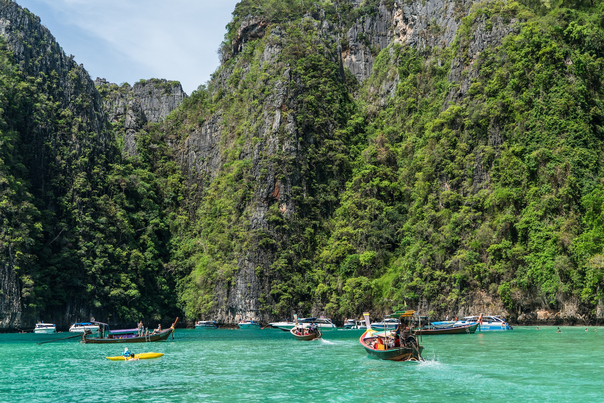
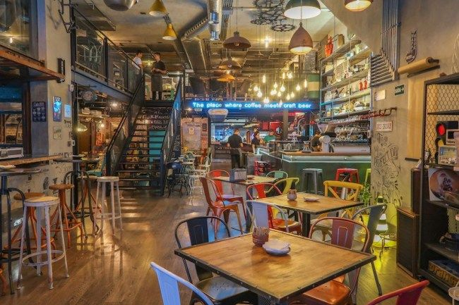

NATUREZA
A flora da TAILANDIA é um explendor aos olhos, ela assusta de tao linda e magnifica que é. Repleta por desenhos no relevo e uma imensidao de verde. ideal para uma viagem que se deseja descansar e relaxar.Paradiziaca ilha no continente asiatico suas aguas sao predominantes azul claro e trasparente, transparecendo limpeza cuidado e exclusividade


restaurant
CULINARIA
A culinaria da tailandia é um misto de culturas orientais, é predominante picante, com muitos molhos e proteinas animais. Seus restaurantes sao tao belos quanto a paisagem do pais, sendo muito bem decorados e sua construcao aconchegante, se voce pretende ir, aproveite a viagem cultural.